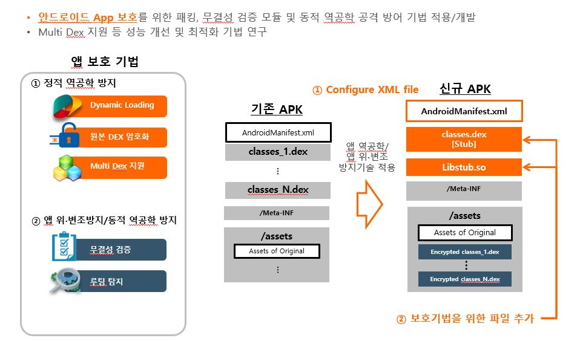
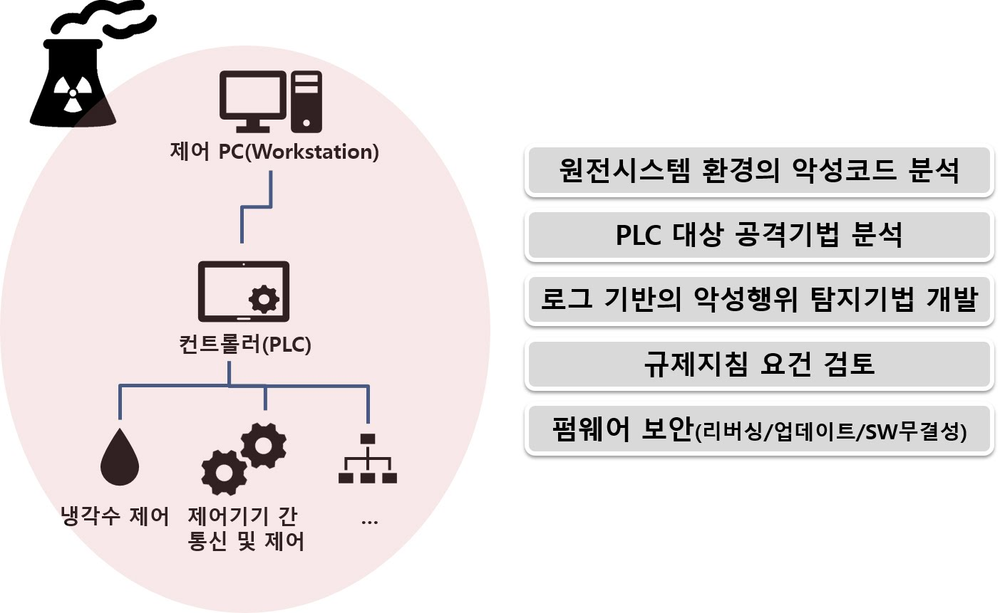
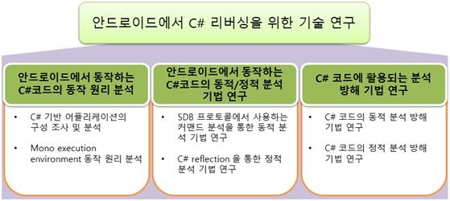
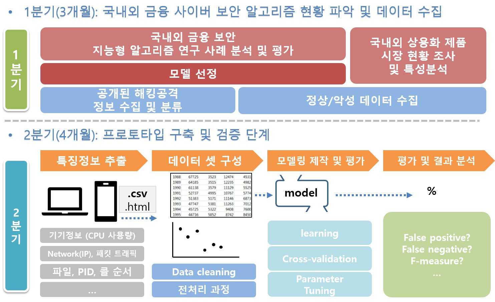

| 번호 | 과제명 | 기간 | 주관기관 | 39 |
교차 플랫폼 프레임워크로 작성된 모바일 멀웨어를 탐지하기 위한 지능형 분석 시스템이 연구는 2018년도 정부(과학기술정보통신부)의 재원으로 한국연구재단의 지원을 받아 수행된 기초연구사업임(no. 2018R1A2B2004830) |
2018.03.01.~2021.02.28. | 한국연구재단(NRF) | 38 |
암호화된 처방 정보 기반 B2B2C 스마트 재활 서비스 SW 개발이 연구는 2019년도 정부(과학기술정보통신부)의 재원으로 정보통신기술진흥센터의 지원을 받아 수행된 연구임(No.2018-0-00640-002,암호화된 처방 정보 기반 B2B2C 스마트 재활 서비스 SW 개발) |
2018.05.01.~2020.04.30. | (주)네오펙트 | 37 |
원전 안전등급제어기기 (PLC) 사이버침해 예방 및 탐지 기술 개발본 연구는 산업통상자원부(MOTIE)와 한국에너지기술평가원(KETEP)의 지원을 받아 수행한 연구 과제입니다. (NO. 20171510102080) |
2016.12.01.~2020.12.31. | (주)수산이앤에스 | 36 |
SW 중심대학 산학협력 프로젝트본 연구는 과학기술정보통신부 및 정보통신기술진흥센터의 SW중심대학지원사업의 연구결과로 수행되었음"(2017-0-00091) |
2019.03.02∼.2019.12.31 | 단국대학교 | 35 |
세이프 웰빙을 위한 IoT 기반 스마트 웨어러블 SW 기술개발본 연구는 과학기술정보통신부 및 정보통신기술진흥센터의 대학ICT연구센터육성지원사업의 연구결과로 수행되었음(IITP-2018-2015-0-00363) |
2015.06.~2020.12. | 단국대학교 | 34 |
모바일 앱들 간에 유사성 비교 기반 기술 연구본 연구는 과학기술정보통신부 및 정보통신기술진흥센터의 SW중심대학지원사업의 연구결과로 수행되었음 (2017-0-00091) |
2018.03.02.~2018.12.31. | 정보통신기술진흥센터(SW중심대학 지원사업) | 33 |
머신러닝 기반의 안드로이드 악성코드 탐지 기법 연구본 연구는 과학기술정보통신부 및 정보통신기술진흥센터의 SW중심대학지원사업의 연구결과로 수행되었음 (2017-0-00091) |
2018.03.02.~2018.12.31. | 정보통신기술진흥센터 | 32 |
건전한 SW 생태계 구축을 위한 SW 저작권 기술 개발본 연구는 2015년도 정부(교육부)의 재원으로 한국연구재단의 지원을 받아 수행된 기초연구사업임(no. NRF-2015R1D1A1A02061946) |
2015.11.01.~2018.10.31. | 한국연구재단(NRF) | 31 | 난독화된 달빅 바이트코드 탐지에 적합한 코드 측정 요소 식별 연구 | 2018.04.01.~2018.10.31. | 국가보안기술연구소 | 30 | NAS에 대한 보안 취약점 분석 | 2017.04.01~2017.12.31. | 정보통신기술진흥센터 | 29 |
안드로이드 기반 C# 코드 분석 기술 연구 |
2017.05.01.~2017.10.31. | 국가보안기술연구소 | 28 |
금융환경에 적용 가능한 지능형 사이버 보안 |
2017.05.01.~2017.11.31. | 금융보안원 | 27 | 해킹으로부터 앱을 보호하기 위한 새로운 모바일 보안 프레임워크 | 2015.11.01.~2017.10.31. | 한국연구재단(NRF) | 26 | 안전한 클라우드-웹OS 단말 플랫폼 기술 연구 | 2015.05.20.~2015.12.19. | 국가보안기술연구소 | 25 | 고품질 융합 소프트웨어 개발 지원 도구 연구 | 2013.09.01~2016.12.31. | 정보통신산업진흥원(NIPA) | 24 | BK21 + 지능형 사물을 위한 융합 소프트웨어 전문 인력 양성 사업 | 2013.03.~2016.02. | 한국연구재단(NRF) | 23 | 안드로이드 어플리케이션의 소스코드 부정사용 방지 기술 개발 | 2013.03.01.~2015.02.28. | 방송통신위원회 | 22 | 바이너리 코드 동적고유정보 기반 SW 유사성 감지 기술 개발 | 2012.06.01.~2015.02.28. | 문화체육관광부 | 21 | 시스템 소프트웨어 기반 모바일 앱 불법 복제 방지 기술 연구 개발 | 2011.08.~2014.03. | 문화체육관광부 | 20 | 정보보호제품 공통요소에 대한 취약점 수집 및 시험절차서 개발 | 2011.05.~2011.12. | 한국인터넷진흥원(KISA) | 19 | RFID, USN, 웹 2.0 등 ICT 신기술 보안취약점 분류방안 개발 | 2011.05.~2011.08. | 한국인터넷진흥원(KISA) | 18 | 스마트폰 소프트웨어를 위한 취약점 관리 및 안전한 SDLC 프로세스 | 2010.09.~2013.08. | 한국연구재단(NRF) | 17 | 홈페이지 은닉형 악성코드 유포패턴 분석방법 연구 | 2010.04.~2010.08. | 한국인터넷진흥원(KISA) | 16 | 정보신기술 취약점 도출 및 중장기 대응전략 수립 | 2010.04.~2010.08. | 한국인터넷진흥원(KISA) | 15 | 소프트웨어 보증을 위한 정적/동적 분석 기술과 역공학 방지 기법의 융합에 관한 연구 | 2009.09.~2011.08. | 한국연구재단(NRF) | 14 | 소프트웨어 공학 방법론과 금융공학 지식 기반 차세대 금융 SW 프레임워크 | 2009.08.~2012.12. | 정보통신산업진흥원(NIPA) | 13 | 윈도우 멀티미디어 취약점 분석 방법론 연구 | 2009.05.~2009.09. | 한국정보보호진흥원(KISA) | 12 | 윈도우 환경에서의 역공학방지 기법 분석 및 무력화 도구 개발 | 2009.02.~2009.11. | 한국정보보호학회(KIISC) | 11 | 임베디드 소프트웨어 집약 시스템을 위한 효율적인 정보보호 융합 기술 | 2008.11.~2009.8. | 한국학술진흥재단(KRF) | 10 | 소스코드 역분석 방지를 위한 난독화 기법 연구 | 2008.11.~2009.04. | 컴퓨터프로그램보호위원회(SOCOP) | 9 | 웹 방문에 의한 사용자 개인정보 침해 분석 시스템 구축 | 2008.06.~2008.09. | 한국정보보호진흥원(KISA) | 8 | Research trends in security based on virtualization technology | 2006.09.~2006.11. | 삼성전자 | 7 | 소프트웨어 보안 취약점 분류방법 및 검출방법에 대한 연구 | 2006.03.~2006.08. | 국가보안기술연구소(NSRI) | 6 | 임베디드 시스템을 위한 MP SoC 운영체제의 스케줄링에 관한 연구 | 2005.12.~2006.11. | 한국학술진흥재단(KRF)) | 5 | 상황인식에 기반한 모바일 DRM을 위한 프레임워크 연구 | 2005.12.~2006.11. | 한국학술진흥재단(KRF) | 4 | 공개 SW 패치 업데이트 GUI 프로그램 개발 | 2005.06.~2005.11. | 한국IT산업진흥원(KIPA) | 3 | Understanding and Practicing Computer Security Technologies | 2004.05.~2005.02. | 한국과학기술재단(KOSEF) | 2 | A Study on Analysis Procedure of Software Security Vulnerabilities | 2003.10.~2003.12. | 한국정보보호진흥원(KISA) | 1 | Establishment of an Installation Method for Integrated Platform | 2003.08~2003.12. | 한국교육학술정보원(KERIS) |
|---|